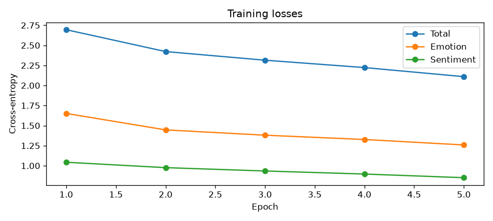
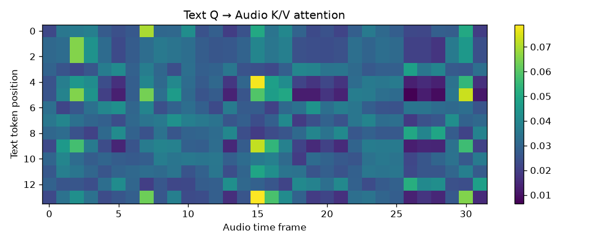

Multimodal Cross-Attention + Multi-Task Learning
Dataset: MELD, text + real speech. Text embeddings form Q, temporal audio embeddings form K,V. Two trained heads predict emotion (7 classes) and sentiment (3 classes).
Trained epochs: 5
Training dynamics

Cross-modal attention example

Test metrics
Emotion
Accuracy: 0.500 | Macro-F1: 0.191
Classes: neutral, surprise, fear, sadness, joy, disgust, anger
[[103, 6, 0, 0, 17, 0, 0], [15, 8, 0, 0, 4, 0, 0], [5, 0, 0, 0, 1, 0, 0], [16, 0, 0, 0, 5, 0, 0], [22, 1, 0, 0, 14, 0, 0], [3, 0, 0, 0, 1, 0, 0], [8, 3, 0, 0, 18, 0, 0]]
Sentiment
Accuracy: 0.524 | Macro-F1: 0.454
Classes: negative, neutral, positive
[[34, 29, 14], [29, 86, 11], [13, 23, 11]]